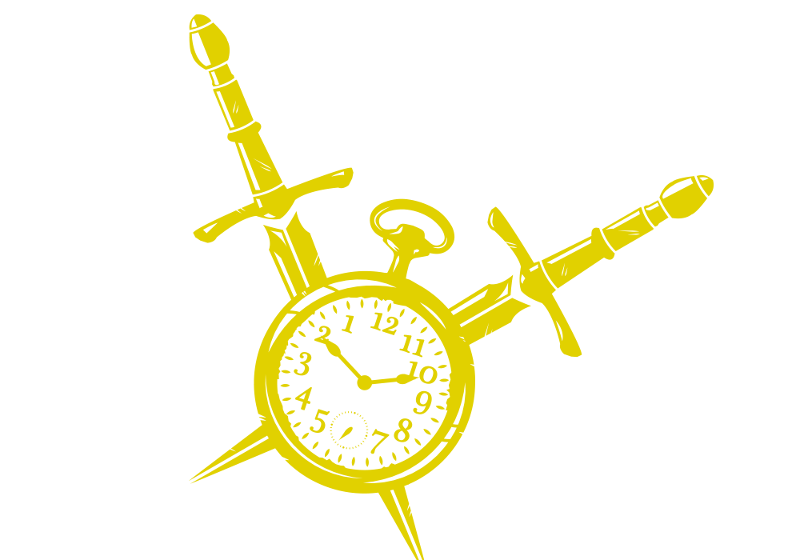
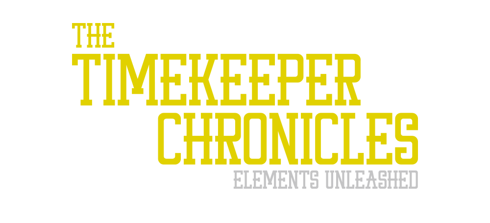

Terug
The Timekeeper Chronicles is een fantasy boek dat wordt geschreven door Robert Kroon. Mij werd gevraagd de cover van het boek te ontwerpen.

Op de cover van het boek worden twee elementen weergeven die betrekking hebben op het verhaal. In het verhaal vechten de figuren met elkaar door middel van dolken. De klok staat voor het tijdreizen tussen verschillende dimensies. Voor de juiste positie van de elementen heb ik vooraf een aantal schetsen gemaakt. Vervolgens heb ik deze schetsen uitgewerkt in Illustrator.

Het lettertype moest een sterk en tegelijkertijd mythische sfeer overbrengen. Daarnaast moest het aansluiten bij de elementen. Om er voor te zorgen dat het samen één geheel zou worden, heb ik daarom de titel dezelfde kleur gegeven als de elementen.
